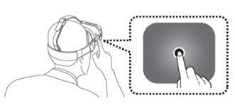

Clique sobre as áreas destacadas em vermelho

Sua função é a mesma do botão HOME do celular, é fazer com que independente de onde o usuario esteja no Gear VR (Exemplo: aplicativos) ele consiga voltar a tela principal do sistema.
Como o botão home ele serve para a mesma função do voltar do celular, porém quando precionado por alguns segundos ele abre uma tela de configurações rapidas do sistema do Gear VR que funciona integradamente com o sistema do Celular.
O touchpad instalado do lado direito do Gear VR é a principal forma na qual o usuario o comanda, devido a nessecidade do celular rodar um segundo sistema operacional, feito para o Gear Vr com uma loja propria de aplicativos, a unica forma de operar o sistema é utilizando o touch pad e a movimentação da cabeça, ja que a tela do celular é utilizada como tela do Gear VR.
Os Botões de volume, permitem que o usuario possa controlar o vulume do Celular ou dos fones de ouvido, diretamente pelo Gear VR.
O Adaptador é a principal parte do Gear VR, pois é a peça que faz a comunicação com o dispositivo que no caso sera o celular, onde rodara o OCULUS System, que funciona como um segundo sistema opercional em seu celular, devido a esse fato somente os celulares topo de linha da empresa funciona com o Gear VR.